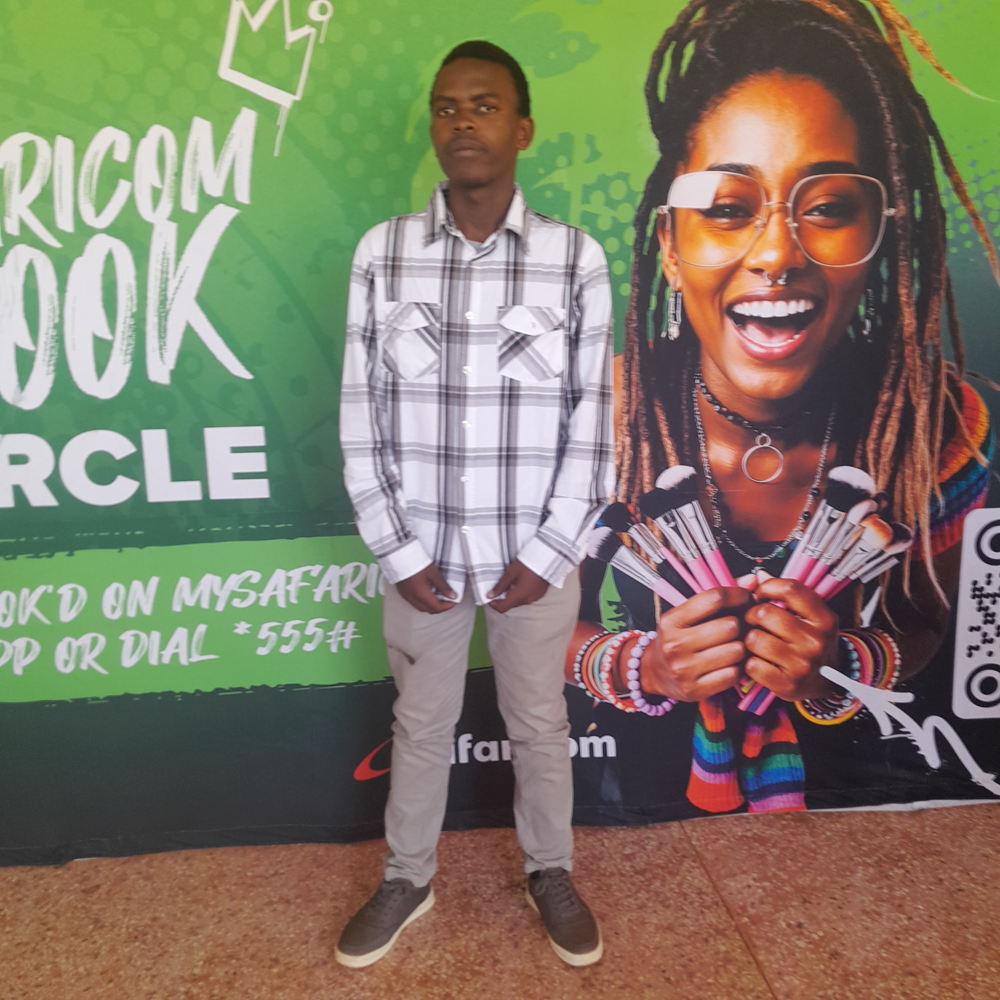

I'm ODULA MARK ,resident of county 044 and a first-year Bachelor of Science in Information Technology student with a passion for coding and cybersecurity.Reg No CT 203/123941/25 . I love exploring programming and digital security, eager to create impactful projects in the future.#The future is now. The following is a demonstraration of skills gained in coding up to this far with my first static HTML page.The skills are as per the knowledge given by the COD information Technology department ,Sir.David Kibaara many thanks for that.
These photos highlight moments from my younger years to date,ranging from my highschool to some of my primary school years.The moments were fun filled with memories that would never fade,from where tech meant nothing to where it means everything.
|
|
|
|
|
| High school trip | Day in the life of a highschool student | reality 101 # After classs | time out | Le Familia |
These photos capture my journey this far since i joined Meru university and my enthusiasm for Technology and the never ending strive to leran more with each passing day as the saying by the Us Marines goes...The only easy day was yesterday .
.jpeg) |
.jpeg) |
 |
| Tech event of the innovation club | Innovation club Hike | Cyber Security community sessions |
I got a chance to attend the safaricom hookup event under the safaricom engineering community specifically in cloud computing .
It was an eye opener and a great experience to learn from the best in the field of technology.it run for 3 days from 13-15 october 2025.
The following photos capture some of the moments during the event.i also attended a google developers online forum on cybersecurity hosted by leads
from JKUAT it was an experience worth re living as we got hands on skills on port scanning tools used by pentesters ie Nmap.
|  |  |
 |
| After completion of the sessions | Hands on skills in Nmap | A snapshot of what we learnt |
Programming: Python, HTML | Cybersecurity: Basic network analysis using wireshark, ethical hacking fundamentals.all credit to the Meru university cybersecurity club.#cybersecurity#Meru university
Connect with me through the following social platforms:
Email: xiascreme@gmail.com
Instagram: @complex.giant
X: @OdulaM95266
Discord: Sirchemicals
©ODULA MARK OF THE SCHOOL OF COMPUTING AND INFORMATICS CT 203/123941/25 .SCI IS THE LIMIT.